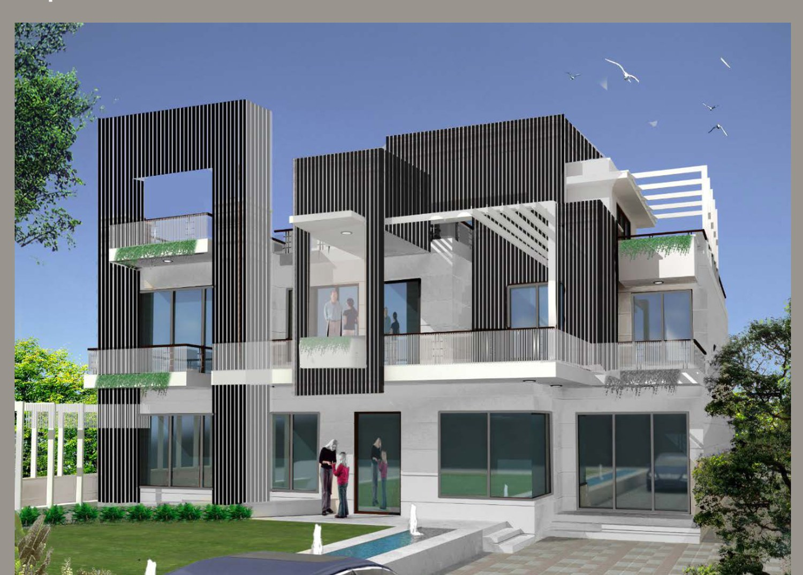
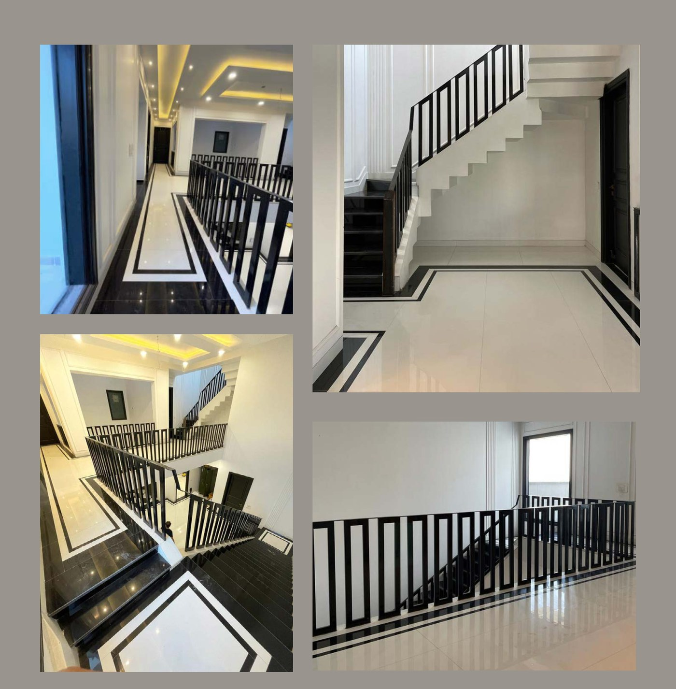
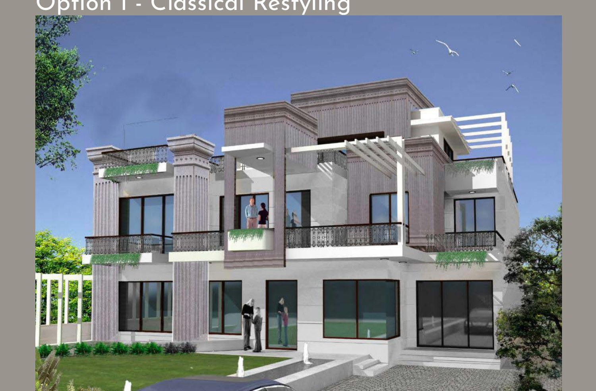

05Related Work
A Gurgaon villa restyled. Keeping the structure, two design routes were drawn for the facade and interiors — a restrained classical re-reading, and a bold modern "French Retro Chic". The black-and-white retro route won.

The villa was already built; the brief was to give it a new character without touching the bones. Two directions went on the table — one that re-read classical architecture with restraint, and one that pushed modern, sharp and bold.
The owner chose the second: a black-and-white scheme, affectionately called "Retro French Chic", run consistently from the street facade through to the staircases inside.


Sharp, modern, quietly bold.
"French Retro Chic" reads as an elegant crossroads between restraint and boldness — clean horizontal masses, dark cladding against white, purposeful lines. Inside, the same logic: black banisters and trims against white marble, lit mostly by daylight and warmed with artificial light only when the sun's gone.
The road not taken kept things classical — a restrained re-interpretation celebrating fluted columns, traditional marble flooring and wall lighting over ceiling lighting. Drawn fully so the owner could choose with eyes open, it lost to the bolder scheme.